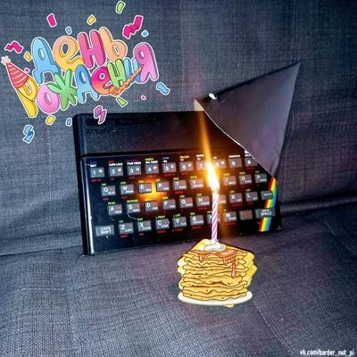
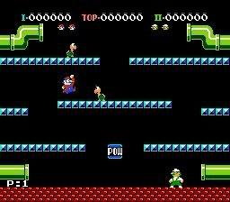
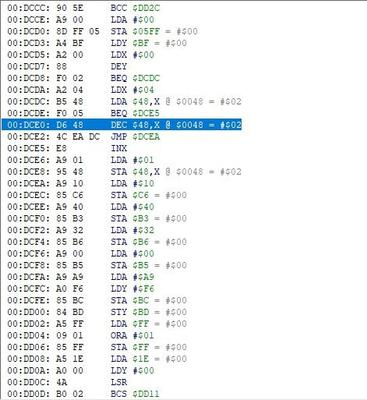
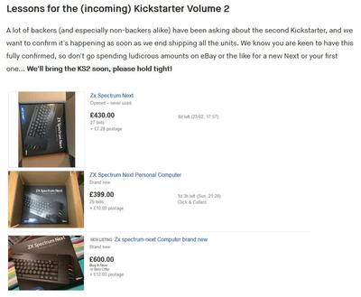
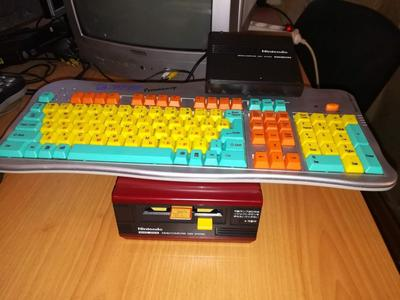
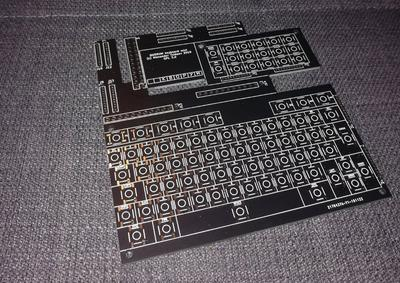
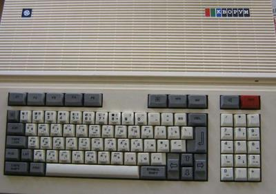

Спекки 38
Так-так, кому там вчера стукнуло 38? Вот тебе карантинный тортик, дружище! (И немного вырвиглазных мэдскиллзов)
Ведь именно 23 апреля 1982-го ZX Spectrum поступил в продажу 🎉
{kind=link}


Так-так, кому там вчера стукнуло 38? Вот тебе карантинный тортик, дружище! (И немного вырвиглазных мэдскиллзов)
Ведь именно 23 апреля 1982-го ZX Spectrum поступил в продажу 🎉

https://vk.com/wall-168374125_405
Продолжая тему внешних звуковых чипов для Famicom. Вот эта красота - это наш родимый AY-3-8912. Правда, в ZX Spectrum он тактируется частотой 1.78 Mhz. Здесь же, хотя сам процессор приставки работает на тех же 1.78 MHz, AY тактируется половиной от этой частоты. Собственно, исключительно делением клока пополам и занимается один из трех напаянных "мертвых тараканов" - триггер 7474. Но вот если добавить переключатель, то можно сделать картридж, в котором одним щелчком AY можно перевести в точно такой же режим, как в Спектруме.
Даже напрашивается идея для первоапрельской ретрохайтек-шутки - сделать картридж для Денди, который будет играть спектрумские pt3 музоны.
https://vk.com/wall-29534144_13135139
Приятный чип-тюн альбом. Правда, это немного чит-тюн 😑 Используется маппер Konami VRC6, у которого на борту два дополнительных канала прямоугольников и, главное, канал пилы, которого в Фамикоме изначально не было.
Читерский чип-тюн это ещё и потому, что чтоб послушать на реальном железе, придется найти где-то картридж с VRC6 (третья кастла, например), и перепаять в нем ПЗУ, что немного варварство.
Легонько хакнул ром Mario Bros на вечные жизни.
Мы немножко с дочерью-трехлеткой играем в игры для Денди на эмуляторе. И обычно это не очень продуктивно, так как она сливает за минуту. Так что читы - наше всё. Но для Mario Bros читы почему-то не гуглятся, пришлось сделать свой. В итоге залипли на часок, дошли до 25-го уровня.
Скачать

Та самая команда на уменьшение количества жизней, которую нужно убрать, заменив на NOP; NOP; (0xEA 0xEA)

ESP8266 ZX Spectrum Emulator
Вроде ничего особенного, мало ли уже всякого на ESP8266 наделано. Но тут такая кошмарная схема, она прямо как побитый голодный котенок в подъезде, забившийся в угол и с надеждой заглядывающий в глаза прохожим. Просто нельзя пройти мимо, хочется взять и перерисовать. Ну а потом, наверное, и собрать, благо лежит пара таких экранов и с десяток ESP-12. Взялся, в общем.

Этот Next вышел, несите следующий!
Создатели только что окончательного вышедшего ZX Spectrum Next анонсировали новую кампанию на Кикстертере в ближайшем будущем. Тем временем на Ebay уже вовсю продают новинку по двукратной стоимости. Есть предложения и по трехкратной - желающих купить, впрочем, пока нет.
Я четыре года, прошедших со времен первого кикстартера, откладывал с завтраков и мороженного, и если цена в новой кампании вырастет не очень сильно (а исходно он стоил всего £175), то, пожалуй, даже и закажу.
Купил дискет для Famicom Disk System (FDS) и смог, наконец, опробовать его в деле.
Из всего моего фамиком-совместимого железа лучше всего с FDS заработал, как ни странно, Магистр Репетитор. Кто не в курсе - это клон фамикома с интегрированной клавиатурой Family Basic (в наших широтах, впрочем, можно просто сказать "Сюбор", и все поймут как надо). Одновременно это самый дешманский (во всех смыслах - попробовали бы вы эту отвратительную клавиатуру!) фамиклон, который можно свободно купить сейчас.
На самом деле, никаких принципиальных проблем тут быть не должно. И дело всё, как мне кажется, в питании. Я пробовал ещё Dendi Junior из середины 90-х и Simba's Prince из их конца, и на первой вообще ничего не грузится, а на второй игры в 90% случаев виснут после старта. "Магистр" из них самый свежий (~2003 г.) и, вероятно, самый малопотребляющий в плане тока. Плюсом за эту версию то, что FDS просто не завёлся с блоком питания, который с ним приехал. Пришлось подключить его на БП от приставки, а её, соответственно, переткнуть на блок от FDS.

Сегодня стало известно, что 7 января скончался Нил Пирт, ударник группы Rush. В честь этого немного тематического чиптюна.
Странно, что на AY-3-8910 никто их не каверил. Ближе всех на на околоспектрумской сцене к этому подошел С-Jeff, чей альбом "Big Steel Wheels" назван в честь строчки из песни Headlong Flight с последнего (теперь уже, видимо, вообще последнего) альбома этой легендарной группы.
Развел плату мини-клавиатуры «Кворума» по типу той, что в Карабасе-нано. Оригинальная клава у Кворума пленочная и часто дорожки уже неживые. Хочется иметь какой-то костыль на такой случай.
На самом деле тут аж 4 платы: основной блок клавиш, цифровой блок, адаптер-соединитель для Кворума и адаптер для Карабаса. Основной и цифровой блоки спаиваются с одной из соединительных плат в зависимости от того, для какого компа делаем клавиатуру. Хочется иметь костыль на случай, если понадобится на голой плате LOAD "" вводить какой-нибудь.
Ради экономии на производстве пришлось сделать вид, что это единый дизайн, так что пилить на 4 куска придется дремелем. Зато всего $2 включая доставку (jlxpcb).


Самый странный канал на ютубе — это, конечно, «Наша жизнь на Аляске». Начинался как обычный канал о кулинарии и огородничестве, созданный русскоязычной семьей из Анкориджа. И вдруг однажды между выпусками "Почему огурцы растут крючком" и "Простой и вкусный рецепт посола рыбы" глава семейства выложил ролик о том, что у него есть ещё хобби. Он на досуге переделывает настольные консоли в портативные, да так, что Бенедикт Хекендорф (Ben Hack, тот чел, что делал из всего, включая спектрум, мини-ноутбуки) просто отдыхает. Еще и делает к ним самодельные корпуса из эпоксидки, которые выглядят не хуже заводских. При всем этом у канала 7 тыщ подписчиков, мизерные просмотры, а основная часть комментариев под видео - бессмыслица от взаимных друзей с именами в духе "Рецепты пельменей от Катюшки". Такая несправедливость, что кулаки сжимаются и зубы скрипят.
Но ничего, недавно он взялся за Амигу, а это тема беспроигрышная. "БЫТ_КОМПЫ" в ВК уже репостнули 😀
https://www.youtube.com/watch?v=RBP2_wuBWVQ
{kind=link}
{kind=link}
{kind=link}
{kind=link}
{kind=link}
{kind=link}